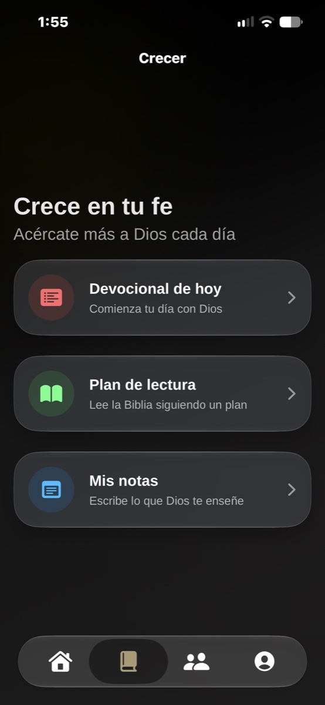

Un feed de
historias de fe.
En el feed podrás descubrir lo que publican otros cristianos y compartir algo tuyo, desde una canción hasta un testimonio.

En el feed podrás descubrir lo que publican otros cristianos y compartir algo tuyo, desde una canción hasta un testimonio.
Encontrarás personas que comparten tu fe y podrás escribirles por chat.

Tendrás devocionales, planes de lectura de la Biblia y un lugar para guardar tus reflexiones.

Vistas de la app en desarrollo. El diseño y las funciones pueden cambiar.
Podrás unirte a grupos por tema para hablar de la Biblia, compartir preguntas y escuchar cómo viven su fe los demás.
Es una red social cristiana en desarrollo para conocer personas que comparten tu fe, publicar lo que vives y crecer juntos en Cristo.
Selah todavía está en desarrollo y aún no hay una fecha de lanzamiento anunciada.
Podrás publicar testimonios y videos, conversar por chat, participar en grupos y compartir peticiones de oración. También estamos preparando devocionales, planes de lectura y notas personales.
Cada grupo reunirá hasta ocho personas para conversar por texto sobre un tema. Podrás participar en dos grupos a la vez.
Puedes compartir Selah con tu comunidad o colaborar con el equipo.
Invita a esa persona a conocer lo que estamos construyendo.